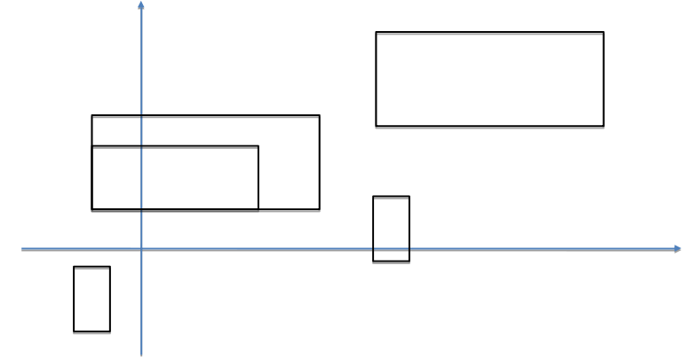

1.7 RELACIONS ENTRE CLASSES
Ús i composició
Poden existir objectes de la classe B que no estiguin sotmesos a la relació de composició.
Hi ha altres relacions d'ús entre classes que no impliquen composició.
Exemple: Classe Rectangle

Operacions proposades per a la interfície:
- crear un rectangle a partir del seu vèrtex inferior esquerre, la seva base i la seva altura
- obtenir la base, l'altura i l'origen (vèrtex inferior esquerre)
- obtenir l'àrea
- obtenir el perímetre
- obtenir el centre
- mostrar l'origen, la base i l'altura
- mostrar els seus 4 vèrtexs
- desplaçar el rectangle a partir d'un vector (x,y)
- escalar un rectangle a partir d'un factor d'escala des de l'origen
- escalar un rectangle a partir d'un factor d'escala des de l'origen
Rectangle.h:
#include "Punt2D.h"
class Rectangle {
// Descripció: un rectangle 2D, alineat amb els eixos de coordenades
public:
// Constructors
Rectangle();
// Pre:--; Post: rectangle (0,0),(1,0),(1,1),(0,1)
Rectangle(Punt2D origen, double base, double altura);
// Pre: base,altura>0 ; Post: rectangle amb vertex_inferior_esquerre=origen i base i altura
// Consultors
double base() const;
// Pre: --; Post: retorna base del rectangle
double altura() const;
// Pre: --; Post: retorna altura del rectangle
Punt2D origen() const;
// Pre: --; Post: retorna el punt origen del rectangle
double area() const;
// Pre: --; Post: retorna àrea del rectangle
double perimetre() const;
// Pre: --; Post: retorna perímetre del rectangle
Punt2D centre() const;
// Pre: --; Post: retorna centre del rectangle
void mostrar() const;
// Pre: --; Post: mostra origen (vèrtex inferior esquerre) i base i altura
void mostrar_vertexs() const;
// Pre: --; Post: mostra els 4 vèrtexs en sentit horari, començant per inferior-esquerre
// Modificadors
void moure(double x, double y);
// Pre:--; Post: rectangle desplaçat segons vector (x,y)
void escalar_origen(double factor);
// Pre: factor>0; Post: rectangle escalat segons factor, mantenint el seu origen
void escalar_centre(double factor);
// Pre: factor>0; Post: rectangle escalat segons factor, mantenint el seu centre
private:
// Atributs
Punt2D a_origen; // composició, vèrtex inferior esquerra
double a_base;
double a_altura;
// Definicions
static const int NOMBRE_VERTEXS=4;
typedef Punt2D Vector_punt2D_rectangle[NOMBRE_VERTEXS];
// Mètodes privats
void vertexs(Vector_punt2D_rectangle v_rec) const;
// Pre: --; Post: v_rec conté els 4 vèrtexs en sentit horari començant per inferior-esquerre
};Rectangle.cpp:
#include "Rectangle.h"
// Constructors
Rectangle::Rectangle() {
a_origen = Punt2D(0,0); // ens el podríem estalviar
a_base = 1;
a_altura = 1;
}
Rectangle::Rectangle(Punt2D origen, double base, double altura) {
a_origen = origen;
a_base = base;
a_altura = altura;
}
// Mètodes públics
// Mètodes d'instància
double Rectangle::base() const {
return a_base;
}
double Rectangle::altura() const {
return a_altura;
}
Punt2D Rectangle::origen() const {
return a_origen;
}
double Rectangle::area() const {
return a_altura*a_base;
}
double Rectangle::perimetre() const {
return 2*(a_base+a_altura);
}
Punt2D Rectangle::centre() const {
return Punt2D(a_origen.coordenada_x()+a_base/2, a_origen.coordenada_y()+a_altura/2);
}
void Rectangle::mostrar() const {
cout << "Origen: ";
a_origen.mostrar();
cout << "Base: " << a_base << " , Altura: " << a_altura << endl;
}
void Rectangle::mostrar_vertexs() const {
Vector_punt2D_rectangle v_rec;
vertexs(v_rec); // equival a (*this).vertexs(v_rec);
cout << "Vèrtexs: " << endl;
for (int k = 0; k<NOMBRE_VERTEXS; k++)
v_rec[k].mostrar(); // usem mètode mostrar de Punt2D
}
// Mètodes modificadors
void Rectangle::moure(double x, double y) {
a_origen.moure(x,y); // invoquem mètode de Punt2D
}
void Rectangle::escalar_centre(double factor) {
Punt2D punt = centre(); // invoquem mètode de Rectangle
a_base *= factor;
a_altura *= factor;
a_origen = Punt2D(punt.coordenada_x()-a_base/2, punt.coordenada_y()-a_altura/2);
}
void Rectangle::escalar_origen(double factor) {
a_base *= factor;
a_altura *= factor;
}
// Mètodes privats
void Rectangle::vertexs(Vector_punt2D_rectangle v_rec) const {
v_rec[0]= a_origen;
v_rec[1]= Punt2D(a_origen.coordenada_x(), a_origen.coordenada_y()+a_altura);
v_rec[2]= Punt2D(a_origen.coordenada_x()+a_base, a_origen.coordenada_y()+a_altura);
v_rec[3]= Punt2D(a_origen.coordenada_x()+a_base, a_origen.coordenada_y());
}Programa que usa la classe Rectangle:
#include"Rectangle.h"
Rectangle llegir_rectangle() {
// Retorna un rectangle les dades del qual s'han entrat per teclat
cout << "Entra components (x,y) del vèrtex inferior esquerre, separades per un espai: ";
double x,y; cin >> x >> y; Punt2D origen(x,y);
cout << "Entra base i altura, separades per un espai: ";
double base, altura; cin >> base >> altura;
return Rectangle(origen,base,altura);
}
int main() {
Rectangle r1= llegir_rectangle();
Rectangle r2= llegir_rectangle();
cout << endl; r1.mostrar(); r1.mostrar_vertexs(); cout << endl;
r2.mostrar(); r2.mostrar_vertexs(); cout << endl;
Rectangle r3;
Punt2D punt_mig = r1.origen().punt_mig(r2.origen());
if (r1.area()<r2.area()) r3 = Rectangle(punt_mig,r1.base(),r1.altura());
else r3 = Rectangle(punt_mig,r2.base(),r2.altura());
r3.mostrar(); r3.mostrar_vertexs(); cout << endl;
r3.escalar_origen(2); r3.mostrar(); r3.mostrar_vertexs(); cout << endl;
r3.escalar_centre(0.5); r3.mostrar(); r3.mostrar_vertexs(); cout << endl;
r3.moure(1,1); r3.mostrar(); r3.mostrar_vertexs(); cout << endl;
cout << "Perímetre: " << r3.perimetre(); cout << endl;
return 0;
}